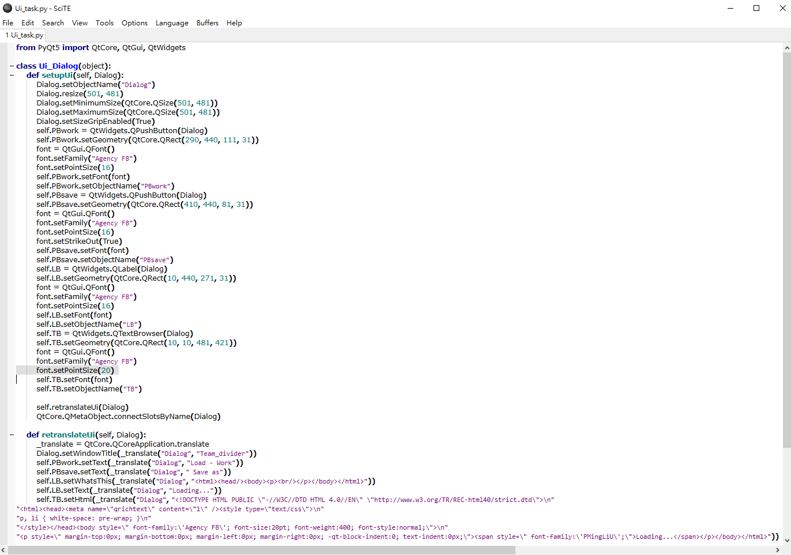
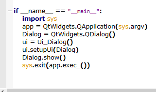
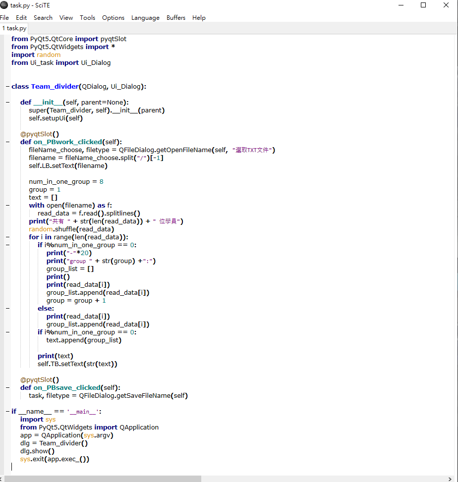
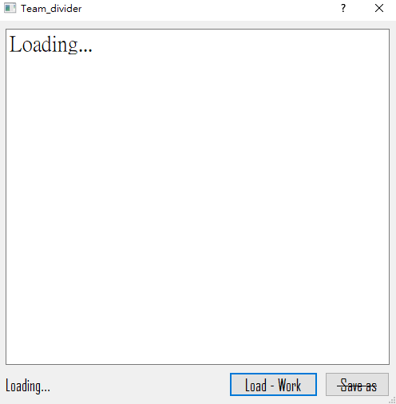
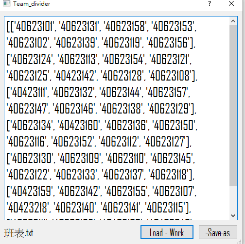

算是半成品的GUI介面 - 點擊即可下載。
說是半成品理由是 太多的理想面想法但能力不足...我要把自己淘汰掉了。
原本來想設計有存檔 、分行、直接編輯等功能 , 但真的沒那個能力可能要問問學長他們 , 之後還想轉成.exe檔 , 但現階段光下載 pyinstaller就一堆error啦...而且也要換成pyside2了可能就先放著去研究其他東西吧。
還想用個GUI介面 , 是關於start.bat的 , 點擊後只跳出黑白窗各一個&一個點擊介面可以直接叫各程式的介面然後還能自己添加程式的功能 ( ( ( 科技進步出於人類的慾望--懶惰。
-----------------------------------------------------------
利用大一學過的eric6設計生成的介面code

這段code位於Ui_task.py下方 , 主要是為了與下方程式task.py作聯結的code

按鈕主要的code設計 , 部分作小修改
PBsave鈕目前只有裝飾功能 , 尚未編譯

這是執行後面介面樣子

執行.txt檔後分出的組別排序 , 意想不到的是竟然可以讀取中文檔名的文件
